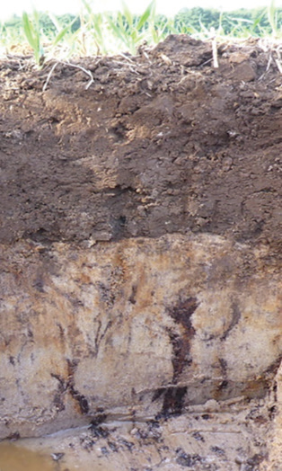
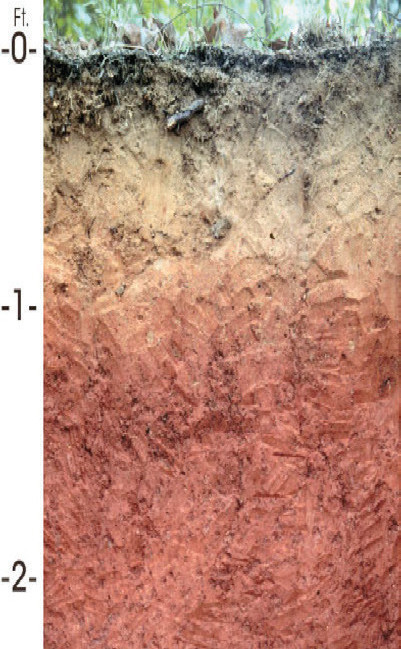
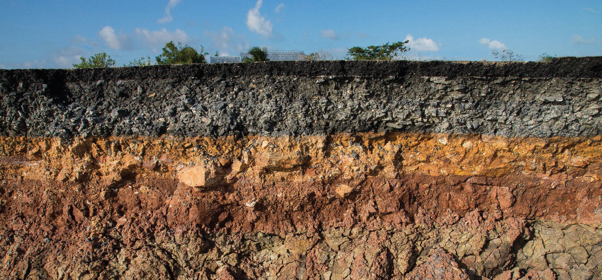

Figure 2.3: Soil profiles
Agricultural soil has certain properties that affect how plants grow. These properties include texture, structure, porosity, soil pH and fertility, as well as living organisms in the soil. These properties can be grouped into physical, chemical, and biological soil properties. In the coming sections, we will learn about these properties.
Physical properties of soil
The physical properties of soil are the features or characteristics of soil that can be seen or observed and measured without changing the soil’s composition. These properties include things such as the feel of the soil (soil texture), how the soil particles are packed or arranged (soil structure), and how much space is between and within the soil particles (soil porosity). The physical properties of soil are important because they affect how water and air move through the soil and how plants grow. Generally, the physical properties of soil determine how well the soil can provide the necessary conditions for plants and other organisms to grow successfully.
Soil texture
Soil consists of solid mineral particles which are sand, silt and clay. Sand particles are the largest, ranging from 0.05 mm to 2 mm in diameter. Silt particles are smaller than sand but larger than clay, measuring between 0.002 mm and 0.05 mm in diameter. Clay particles are the smallest, measuring less than 0.002 mm in diameter. Solid particles of soil which are greater than 2 mm in diameter are considered as stones and gravels. The relative proportion of sand, silt and clay particles in the soil is referred to as soil texture. Soil texture also refers to the feeling of coarseness or fineness of soil determined by the relative proportions of sand, silt and clay